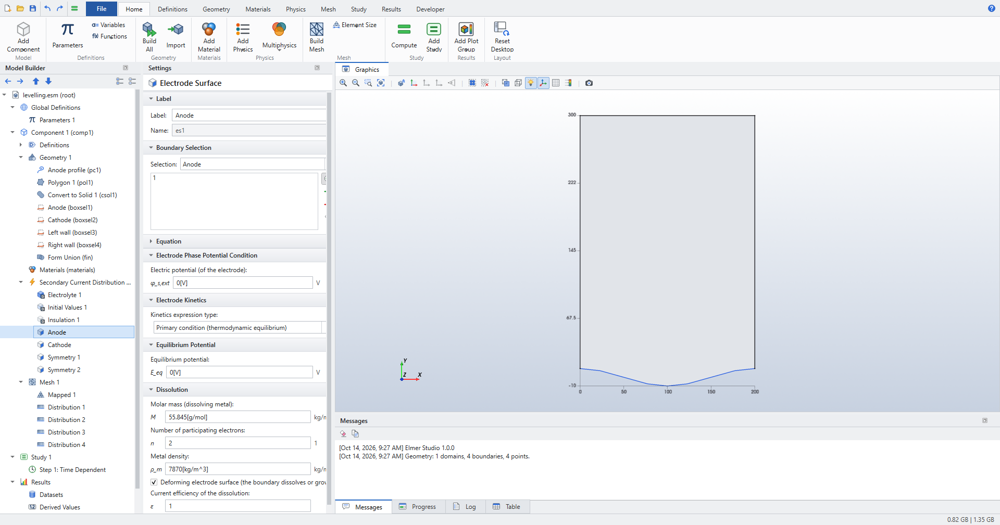
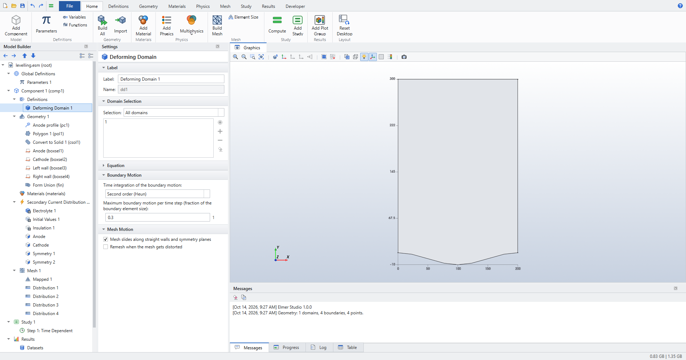
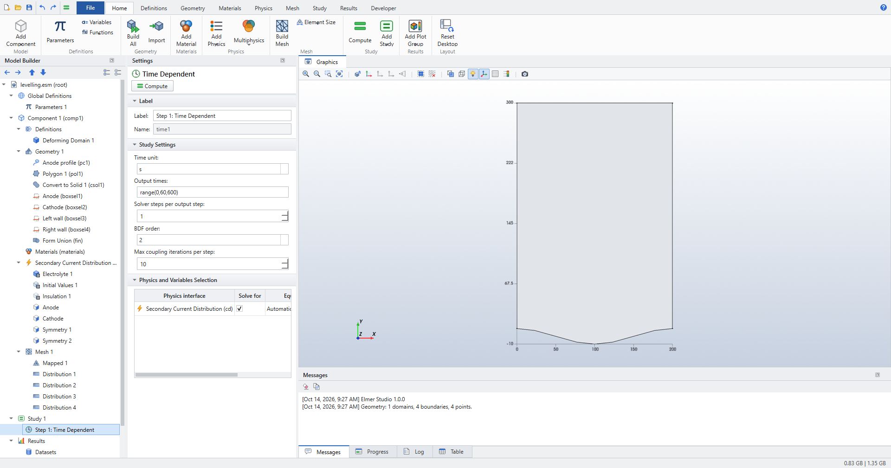
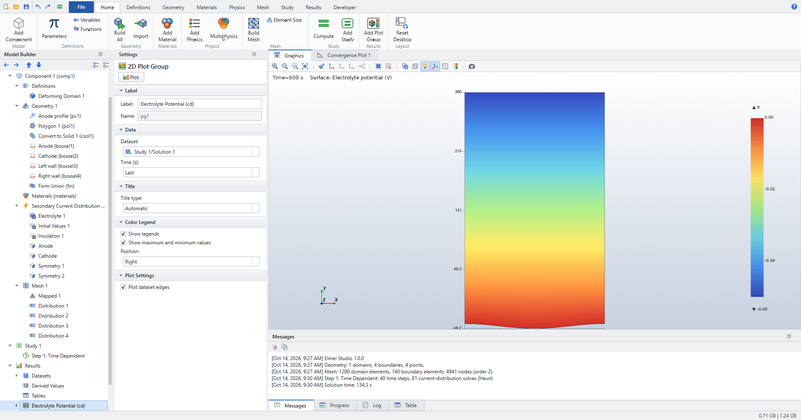
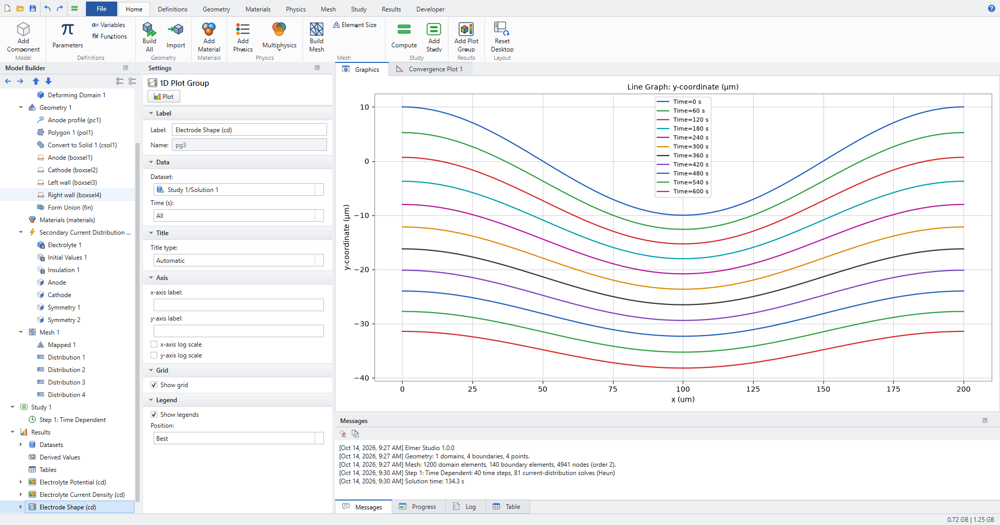
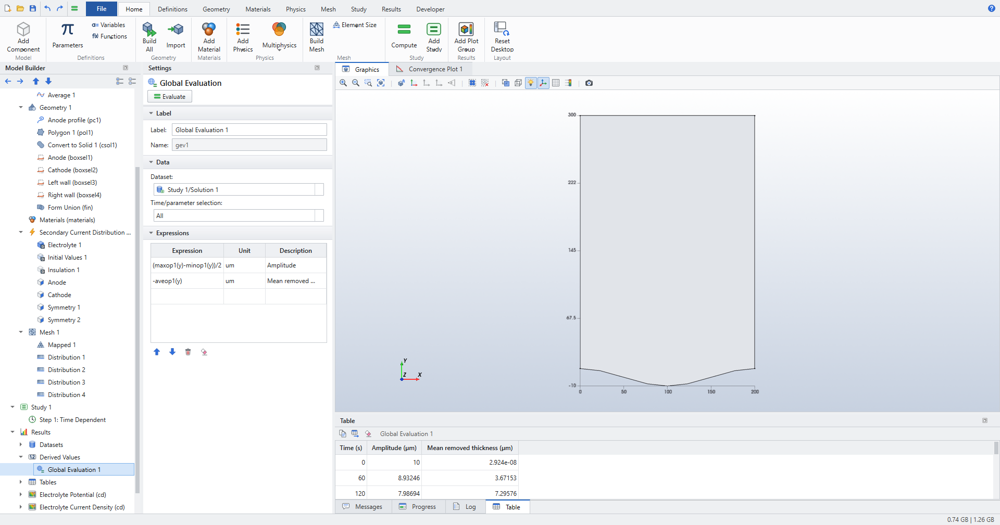
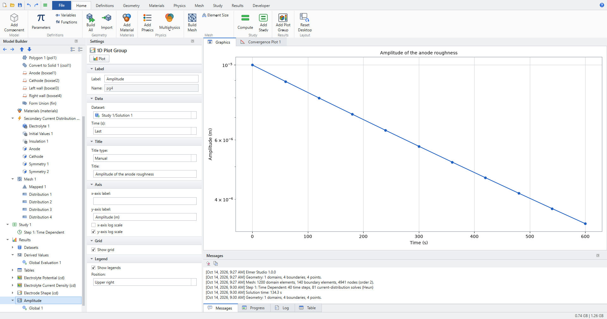

Electrochemistry: deforming electrodes
In electropolishing and electrochemical machining, the anode dissolves where the current leaves it, so its shape changes over time. Crests of a rough surface draw more current than troughs and dissolve faster, and the surface levels out. This tutorial models one wavelength of a rough anode facing a flat cathode, lets it dissolve for ten minutes, and checks the levelling rate against the classical linear theory.
-
Make an electrode surface move with its dissolution rate (Deforming electrode surface), and let the mesh follow it (Deforming Domain).
-
Run a Time Dependent study in which the shape changes.
-
Plot the electrode shape at every output time, and evaluate the roughness amplitude with coupling operators.
Space dimension |
2D |
Physics |
Secondary Current Distribution ( |
Study |
Time Dependent, 0 to 600 s |
Solve time |
about 2 minutes (40 time steps, 81 solves) |
Expected result |
the amplitude decays exponentially with the removed thickness, at the rate k·coth(kL) |
The physics
The electrolyte potential solves Laplace’s equation (primary current distribution: no kinetics, so the current is limited by the electrolyte’s resistance). At every instant, the metal recedes along the electrode normal at the dissolution velocity:
with the local current density \(i_{loc}\), molar mass M, number of electrons n, metal density \(\rho_m\) and current efficiency \(\varepsilon\).
For a small roughness \(h = a\cos kx\) at distance L from the cathode, linear theory gives the local current density \(i \propto 1 + a k \coth(kL) \cos kx\). Feeding it into the dissolution velocity gives the levelling law, in terms of the mean removed thickness \(\bar h\):
Every material and operating constant cancels: the amplitude falls by a factor e for every 1/k of metal removed, here 32 µm. This makes it a clean check of the moving boundary.
1. Model, parameters and geometry
-
› Model Wizard › 2D › Electrochemistry › Secondary Current Distribution › Add › Study › Time Dependent › Done.
-
In Parameters 1:
Name Expression Description lam200[um]Wavelength of the surface roughness
L300[um]Gap from the mean anode surface to the cathode
a010[um]Initial amplitude of the roughness
V50[mV]Cell voltage
sigma10[S/m]Electrolyte conductivity
-
Select Geometry 1 and set Length unit to µm.
-
Draw the anode as a Parametric Curve (right-click Geometry 1 › Primitives › Parametric Curve): x
lam*s, ya0*cos(2*pi*s), with s from 0 to 1, 121 points. -
Close the cell with a Polygon of Type Open curve: x
lam lam 0 0, ya0 L L a0. -
Add Convert to Solid with both curves as input.
-
Add four Box Selections (, level Boundary), labelled after what they select: Anode (y maximum
L/2), Cathode (y minimumL/2), Left wall (x maximumlam/10) and Right wall (x minimum0.9*lam). They stay right when the geometry is rebuilt. -
Press F8.
2. Physics
-
Select Secondary Current Distribution and set Current distribution type to Primary.
-
In Electrolyte 1, set Electrical conductivity to User defined,
sigma. -
Add an Electrode Surface (), label it Anode, and choose the Anode box selection. Keep Electric potential
0[V]. In the Dissolution section keep iron’s molar mass, two electrons and density, and check Deforming electrode surface (the boundary dissolves or grows). Current efficiency stays1.
Figure 1. The anode: a primary electrode that dissolves -
Add an Electrolyte Potential on the Cathode with Electrolyte potential
-V. The current then flows from the anode to the cathode, and the anode dissolves. -
Add a Symmetry on each wall. The walls are symmetry planes of a periodic surface, and the mesh slides along them.
-
Add a Deforming Domain (; it goes under Component 1 › Definitions). It applies to all domains. The defaults are right: second-order (Heun) time integration, at most 0.3 boundary elements of motion per step, and a mesh that slides along straight walls.

Figure 2. Deforming Domain: how the boundary and the mesh move
| COMSOL users: Deforming Domain sits under Definitions, as in COMSOL. The check box on the Electrode Surface replaces the Deforming Electrode Surface boundary condition, and Prescribed Normal Mesh Velocity (also under Definitions) moves any other boundary with an expression. |
3. Mesh
A structured mesh suits this geometry. Set Mesh 1 to User-controlled mesh, add Mapped, and four Distribution nodes: 40 elements on the anode and on the cathode, 30 on each wall.
4. Study
Select Step 1: Time Dependent and set Output times to range(0,60,600) (seconds).

Press Ctrl+=. At every time step, Elmer Studio solves the current distribution on the present shape. It moves the anode at its dissolution velocity and smooths the mesh behind it. It shortens time steps automatically where the boundary moves fast. The Messages pane reports 40 time steps and 81 solves (the Heun predictor doubles them).
5. Results
The default plots show the electrolyte potential and the current density on the deformed geometry at the selected time.

A deforming electrode also gets an Electrode Shape (cd) plot group. It is a Line Graph along the moving boundaries, with x-axis parameter x and expression +y, drawn for All output times.

Amplitude and removed thickness
To put numbers on the levelling:
-
Add a Maximum, a Minimum and an Average coupling operator (), each with Geometric entity level Boundary and the Anode selection.
-
Add a Global Evaluation with Time/parameter selection All and two expressions:
-
(maxop1(y)-minop1(y))/2, unitum, description Amplitude; -
-aveop1(y), unitum, description Mean removed thickness.
-
-
Click Evaluate.

A 1D Plot Group with a Global plot of the amplitude, on a logarithmic y axis, shows a straight line: the decay is exponential.

6. Check the results
-
Levelling rate. From the table, the amplitude falls from 10 µm to 3.39 µm while 34.8 µm of metal is removed, and a fit of \(\ln a\) against the removed thickness over all output times gives \(d\ln a/d\bar h\) = −31 100 m⁻¹. Linear theory gives \(-k\coth(kL)\) = −31 416 m⁻¹, 1.0 % away. The difference is the theory’s own error: it neglects terms of order \((a k)^2\), and here \(a_0 k\) = 0.31.
-
Small amplitudes. The test suite (
tests/test_deforming.py) runs the same cell with a 2 µm amplitude. The measured rate then agrees with linear theory within 1 %. A control run with a uniform recession velocity (Current efficiency1[A/m^2]/iloc) shows no levelling. So the levelling comes from the current distribution, not from the mesh smoothing. -
A flat anode. With
a0 = 0, the gap grows as the metal dissolves, and the current falls. The recession has a closed form, \((L_0+h)^2 = L_0^2 + 2 c\,\sigma V t\) with \(c = M/(nF\rho_m)\). Elmer Studio reproduces it within 2·10⁻⁴, and the electrode current within 10⁻⁹ of \(\sigma V \lambda/(L_0+h)\).
What next
-
Electrochemical machining moves boundaries much further, and sharp corners round off. Check Remesh when the mesh gets distorted on the Deforming Domain, so the mesh is rebuilt on the new shape when its elements degrade (2D models).
-
Passivation thresholds: the current efficiency can depend on the local current density, for example
iloc > 10[A/cm^2], so that only areas above the threshold dissolve. -
Kinetics: the electrode may use any kinetics of the Electrode Surface. Butler–Volmer kinetics reduce the levelling, because the kinetic resistance evens out the current.
The Deforming Domain and the moving electrode surface are described in User guide › Electrochemistry.